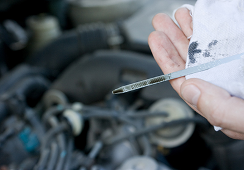
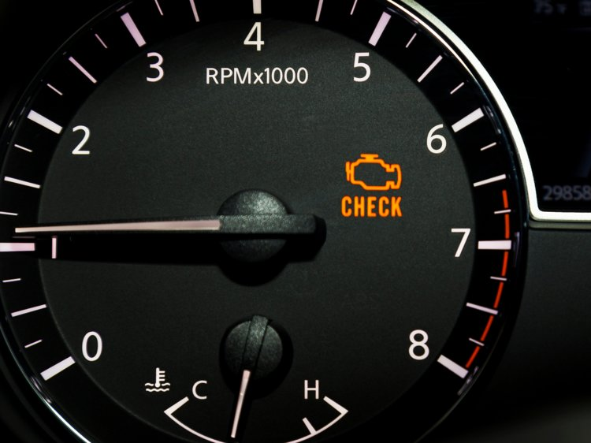

Getting an Oil Change
Most of the time, we may forget to change or check the oil in our cars. Especially if we are driving every day, we get busy, and lose track of time. There are signs you should look for, and if you notice these signs, you should take your car into an auto shop where they can change your oil.
Is your vehicle putting off extra exhaust?
- If you see visible smoke coming out from behind your vehicle, this can be the result of your oil becoming too old to be able to function correctly
Is your oil level falling way too quickly?
- If you are topping off the oil level and it still seems to be dropping very fast over a short period of time, there might be something else going on in your vehicle that you might need to have checked
How low is your oil level?
- Make sure the oil doesn’t go past the minimum line on the stick! Having this level being too low can cause damage to your engine. Make sure to stay in between the min and max lines to ensure that it is at the right level

The grated section shows where the oil level should be at.
Has your engine started to increase in the noise level?
- If you hear what sounds like a knocking noise when you are driving, this may indicate that the oil you have is in bad shape. Problems occur when the oil starts to be old, thin, or has a poor texture to it
Does your vehicle have an irregular oil texture ?
- Car oil should be smooth. If you see that it starts to become gritty, this is an indicator that your vehicle needs an oil change. You will see bumps on the dipstick when you pull it out
Have you put more miles than usual on your vehicle?
- You might have taken a business trip or a road trip which means these are extra miles that you wouldn’t have put on your car if you didn’t take the trip. If this happens, then you will need an oil change sooner than later
Is your Check Engine light on?
- Whenever this light comes on, this is usually not a good sign. This may show that you need an oil change if your vehicle doesn’t have a light specifically for oil changes. Take your vehicle into a mechanic right away if this light comes on

A check engine light in a vehicle.
Is your vehicle shaking while idling?
- If your car starts to shake when it is idling, this means there is more friction in the engine. If this feeling occurs, your oil most likely needs to be changed
Are there ticking sounds when starting your vehicle?
- If you are experiencing ticking sounds, this means that not enough oil is running through the engine valves. You will need to get your vehicle to a mechanic right away if this noise occurs
If you are confused about when to change the oil, just check the owner’s manual for your vehicle. Or, you might have a service reminder that comes with your car to remind you when it’s time to change the oil.
You should be checking the oil at least once a month to make sure everything’s up to speed. This requires checking the dipstick (while your vehicle is on level ground). Pull out the dipstick, wipe it off, stick it back in, take it out and see where the oil has marked the stick. If it’s between the min & max ranges, then you’re good to go. Otherwise you might need to top off or get a new oil change.
You can change your oil whenever you want, it’s up to personal preference. Some people change it at every 3000 miles/3 months, others change at 7500-10,000 miles or 6 months/12 months. Your oil just needs to stay fresh otherwise there will be problems.